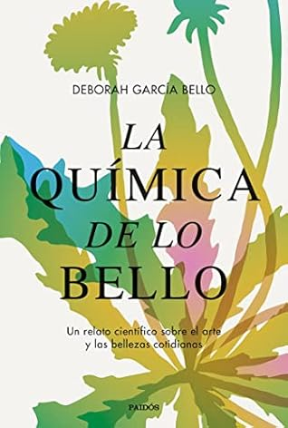

La química de lo bello: Un relato científico sobre el arte y las bellezas cotidianas
Reseña por Jorge I. Zuluaga

Ver detalles · Ver reseña en GoodReads (necesita cuenta)
Por un lado, en los primeros capítulos me encontré con un libro de divulgación científica que rompe los esquemas del género.
El libro se divide en ensayos relativamente cortos que hacen muy cómoda su lectura. Cada ensayo combina historias personales, descripciones de obras de arte —en su mayoría de lo que podríamos llamar arte moderno— y explicaciones científicas relacionadas, principalmente, con la ciencia de los materiales usados en las obras; todo ello matizado con reflexiones profundas sobre la vida, las ciencias y el conocimiento en general.
Su autora, la doctora en química y reconocida divulgadora científica Deborah García Bello, tiene un estilo sencillo y claro; usa frases cortas y precisas, lo que hace comprensible la lectura. Este estilo, entre minimalista y académico, no le resta, sin embargo, profundidad al texto. En más de una oportunidad, la doctora García consigue poner en palabras ideas y reflexiones muy profundas de las que tomé cuidadosa nota. La primera parte de mi copia del libro está llena de muchas notas autoadhesivas y, en más de una ocasión, me vi leyendo el libro con mi cuenta de Twitter siempre abierta para citarla o para extraer de su obra una frase de un autor o una autora a quienes ella menciona. Me impresionó también, muy positivamente, el bagaje cultural demostrado en sus ensayos, que es más propio de autores y autoras especialistas en ciencias humanas o con una larga experiencia de vida.
Para las personas amantes de las ciencias y de las artes por igual, y también para quienes aman la divulgación científica, el libro propone un viaje realmente ameno, ilustrativo y profundo.
¿Cuál es entonces el problema?
A medida que fui avanzando por los ensayos, empecé a saturarme con las descripciones, a veces muy pormenorizadas, de obras de arte totalmente desconocidas y "extrañas". Por supuesto, yo no soy un experto en historia del arte o en artes en general, pero tampoco soy completamente ajeno al tema. El exceso de estas descripciones y la rareza de las obras —propias de su género— terminan agotando.
Además, si bien García incluye en el libro dibujos (sin color) de la mayoría de las obras mencionadas en sus ensayos, muchos de esos dibujos no permiten apreciar las características de las mismas piezas que son, justamente, sobre lo que tratan los ensayos (el color, las texturas, los materiales, etc.).
Para citar un ejemplo —y creo que es el más ilustrativo—, el primer dibujo del libro muestra la obra S41 de Yves Klein, el torso de una mujer desnuda sin cabeza ni extremidades, que está acompañado de la siguiente descripción: "Pigmento azul ultramar sobre escayola". Para mí, y no dudo que para la mayoría de las personas que leen el libro, parece una broma que una figura con esa descripción carezca completamente de color.
Se entiende que cada figura a color en un libro como este aumenta mucho los costos y tal vez hace prohibitiva su publicación o muy caro el producto final. Pero, la verdad, yo habría preferido pagar más por el libro que ver estos dibujos monocromáticos que no permiten apreciar las cosas de las que la autora habla.
El libro tiene momentos muy interesantes en cuanto a divulgación científica se refiere. Su ensayo relacionado con el verdadero color del cielo y los impresionistas me gustó mucho; sus explicaciones sobre la composición de las pinturas o el origen del color de algunos pigmentos fueron increíblemente ilustrativas; asimismo, la ciencia detrás de la fotografía y el revelado fueron bastante novedosas para mí. Los ensayos en los que hace una síntesis de la posición de la filosofía y las ciencias sobre temas peliagudos, como la verdad y el tiempo, son excelentes.
Pero, a la larga, también descubrí que, si bien la doctora García es una buena narradora y una profunda pensadora, sus explicaciones científicas, especialmente las que tienen que ver con su disciplina, la química, son en su mayoría pesadas y difíciles de seguir. Ya en los últimos capítulos se vuelve casi imposible seguir la descripción de sustancias y reacciones químicas.
Esto me hizo pensar sobre el tono general de todo el texto. Mi conclusión, y aclaro que esto es una opinión muy personal y subjetiva, es que el tono del libro en la parte artística es un poco snob, más académico de la cuenta y, en algunos apartes, un poco aburrido. La parte científica tiene sus momentos brillantes y muy claros, pero otros que son difíciles de seguir.
Algunas anécdotas son también demasiado personales o muy locales, especialmente las de los últimos ensayos. Hay incluso frases en gallego, la lengua de la región de la que es originaria la autora en España, que no están traducidas al castellano. Esto no tiene nada de malo, el gallego no es muy diferente al castellano, pero no demuestra mucha empatía de la autora por las personas fuera de su círculo cultural inmediato.
Aun con todo lo anterior, hubo algo que me produjo mucho malestar y no puedo pasar por alto mencionarlo. Me refiero al uso sistemático —y casi abusivo— del masculino genérico y del sustantivo "hombre" para referirse a toda la humanidad.
Alguien podría decir que esto es perfectamente excusable; que mi crítica es propia de personas que exageramos en lo "políticamente correcto". Podrán decir que el masculino genérico todavía forma parte de las reglas (reconocidamente excluyentes) del castellano y que, mientras esas reglas no cambien, la industria editorial y las personas que escriben están "obligadas" a satisfacer esas normas. Pero es que en el libro de García encontré párrafos en los que se abusa de esos genéricos. Hay dos apartados en especial donde "hombre" y "hombres" aparecen casi 6 veces para denotar la totalidad de la experiencia humana. Estuve a punto de señalarlos, pero olvidé hacerlo; si los encuentro, los agregaré a la reseña. Si leen el libro con atención, no dudo que los encontrarán.
Yo me pregunto y me seguiré preguntando: ¿qué dificultad hay en usar "humanidad" en lugar de "hombre"?
Entenderán, además, que hay aquí algo que hace extraño este abuso del masculino genérico: García es una mujer científica. Yo esperaba —y tal vez este sea uno más de los sesgos que nos afectan— que García fuera una persona más consciente de cómo las mujeres han sido excluidas sistemáticamente a través de los "inofensivos" masculinos genéricos. Tal vez lo es, pero no le presta demasiada importancia. Ese es el problema.
Hay en el libro un ensayo ("Mi madre pintándose los labios") en el que la autora ahonda en discusiones sobre las situaciones de las mujeres en la sociedad. Este ensayo —que para mí fue un descanso— refleja que García es plenamente consciente, como no esperaba menos, de los problemas que sin lugar a duda la deben haber afectado personal y profesionalmente. Pero, de nuevo, y lo pregunto respetuosamente, ¿se siente la autora genuinamente identificada con estos genéricos excluyentes?
Otro detalle, por el mismo orden de ideas, es el hecho de que casi todos los artistas mencionados en el libro —hay uno o dos mencionados por cada uno de los 23 ensayos— son hombres. No los conté, pero es posible que García presente en su libro casi 40 artistas con sus obras, de los cuales 3 o 4 son mujeres. Esto me sugiere que no hubo ningún esfuerzo para buscar obras y artistas que, aun sirviendo al propósito del libro, a saber, ilustrar cómo la ciencia es importante en la creación artística, demostraran una representación más pareja de creadores y creadoras.
Yo sé que tampoco es obligatorio, pero conozco el caso de autores y autoras que hacen el esfuerzo y descubren que efectivamente es posible escribir libros en los que hay casi tantas mujeres como hombres para servir de ejemplos.
En síntesis: disfruté de la mayor parte del libro (la última tercera parte la leí con dificultad por los aspectos mencionados arriba). La doctora García es una escritora profunda y muy culta. Extraje explicaciones, ideas y frases muy interesantes de su libro. Creo que la obra logró el objetivo de mostrarme cómo las ciencias y las artes se han encontrado a lo largo de la historia, y cómo, especialmente la química, ha jugado un papel central en esa productiva interacción.
Los defectos mencionados arriba en su texto tal vez solo me afecten a mí.
No dejen de leer "La química de lo bello" y sacar sus propias conclusiones.